Roadbar Evo TLO
Schmolke's benchmark carbon drop bar. Choose 1K or UD weave, three logo editions, and options for internal routing and time trial clip-on reinforcement.
- Weight
- 130 ~ 150g
- Width
- 400 / 420 / 440mm
- Reach
- 73 / 78mm
- Drop
- 125 / 126mm

Konstanz · Since 1992
The Lightest One
One more layer to save one gram. Carbon components wound by hand in Konstanz, Germany.


Folding Bike
Folding bike parts
Lighter with an 80g lowriser and a carbon seatpost
01
Brand
Schmolke CarbonKonstanz · Since 1992
Schmolke Carbon was founded in 1992 by mechanical engineer Stefan Schmolke in Konstanz, a city on the shore of Lake Constance in southern Germany. He raced from a young age with his brother Matthias, and in 1989, just before graduating, the two opened a high-end parts shop. That same year he wrote his diploma thesis on the theory of a carbon racing handlebar.
The following year he built a carbon handlebar that could actually be ridden, and when orders outgrew what he could make, he founded the company in 1992. In 2001 Jan Ullrich finished second overall at the Tour de France on a Schmolke handlebar. More than 30 years on, Schmolke still chooses quality over volume and hands over assembly lines.
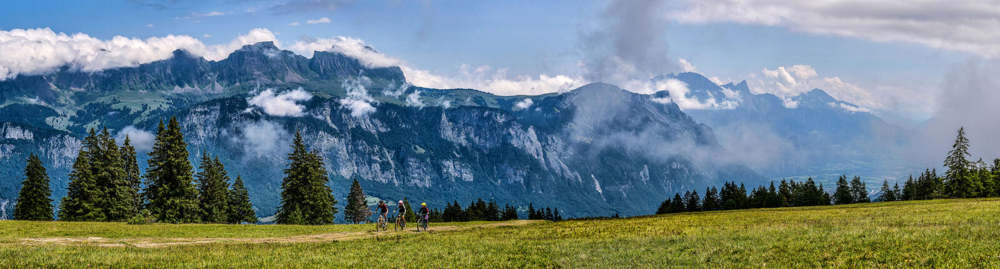
TLO · The Lightest One
TLO stands for The Lightest One, Schmolke's top line. Schmolke first analyses the forces acting on each part by computer, then lays up prepreg differently, up to 23 layers where the load concentrates and as few as 7 where it is light. Unlike parts with uniform wall thickness, material goes only where it is needed, so the result is both light and strong.
The surface is never painted. The matt epoxy finish resists scratches better than paint and adds no unnecessary weight. Choose between two weaves, the fabric-like 1K and the unidirectional UD, finished as the red and white Schmolke Edition, the Black Edition or the White Edition.

The first carbon road handlebar, born from a diploma thesis. Every Schmolke product starts from this one bar.

Prepreg is wound by hand, one layer at a time. The number and direction of layers follow the path of the load.
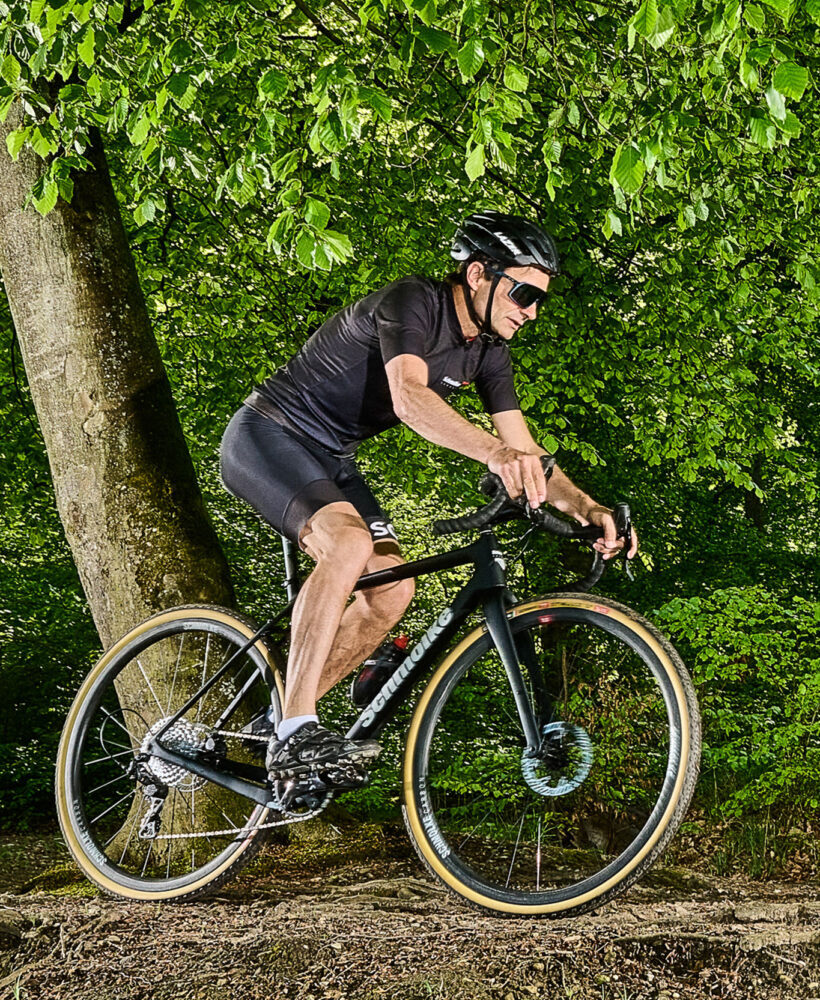
Matt epoxy instead of paint. The carbon weave shows through, without the weight of paint or the worry of chips.

Road, gravel, MTB and folding bikes. Handlebars, seatposts, saddles and wheels made to the same standard.


Founder · Stefan Schmolke
“Anything is possible.”
As a student, Stefan Schmolke researched the carbon handlebar under Hans-Christian Smolik, a leading figure in bicycle technology. After graduating he worked at a design office and at the aerospace company EADS. Today he still develops, or leads the development of, most of Schmolke's carbon components.
Since 2020 Schmolke has worked alongside THM, a fellow German carbon component maker. Schmolke's Leggerissima TLO pairs a THM Clavicula crankset with a Schmolke cockpit, seatpost, saddle and wheels for a complete bike of 5.4kg.
Stefan Schmolke, FounderSchmolke Carbon
The Range
From handlebars to bottle cages, Schmolke's core parts made to the same principle.
Ergonomic drop bar hand-wound from up to 17 prepreg layers. Optional internal routing.
Integrated cockpit that merges bar and stem and hides the cables completely.
Integrated cockpit whose 6° flare gives an aero position that is not too low.
Carbon stem with loop construction, the fibres wrapping fully around the aluminium inserts.
Seatpost with up to 23 layers, soft fore and aft, stiff side to side.
Saddle made from a single piece of carbon, shell, frame and rails included.
130mm-wide 3K carbon saddle for road, gravel and cross-country.
37mm tubeless disc wheelset laced with 24 carbon spokes.
50mm aero disc wheelset that stays under 1kg.
Gravel wheelset laced with textile spokes of 2.2g each.
15mm-rise carbon lowriser for the Brompton T Line.
100% carbon bottle cage for both 500ml and 750ml bottles.
02
Cockpit
Roadbar · Cockpit · StemHand-wound, unpainted
Schmolke began with a handlebar, so the cockpit is the area it has refined the longest. The Roadbar Evo TLO is hand-wound from up to 17 prepreg layers in the heavily loaded centre and 5 in the lower curve, for high stiffness at around 130g. It adds a shape that lets the hands rest easily, 10mm of trim at each end and optional internal cable ports.
In 2026 Schmolke introduced the Roadbar Cockpit TLO and Cockpit Aero TLO, merging bar and stem into one piece. The cables disappear inside the bar and stem, and the flattened tops give the palms a broad, comfortable grip.


Up to 17 layers in the centre, 5 in the lower curve. Varying the layer count between loaded and unloaded areas takes weight out.
Instead of backing the aluminium nuts with a half-round plate, the carbon fibres wrap fully around the inserts. No creaking, even at low torque.
The cockpits hide the cables completely, and the Evo TLO and TLO Stem can be ordered with internal cable ports. The added weight is around 4g.
Light as they are, Schmolke handlebars, stems and cockpits are tested and approved up to 110kg.
Schmolke's benchmark carbon drop bar. Choose 1K or UD weave, three logo editions, and options for internal routing and time trial clip-on reinforcement.
Integrated cockpit with the same reach and drop as the Evo TLO, stem included. Cables run through ports on each side at brake-lever height and through the centre of the stem.
The front of the drops is nearly horizontal, lining the brake levers up with the wrists. Time trial bars cannot be fitted.
Roadbar Cockpit TLO · Cockpit Aero TLO1K weave, black or white logos

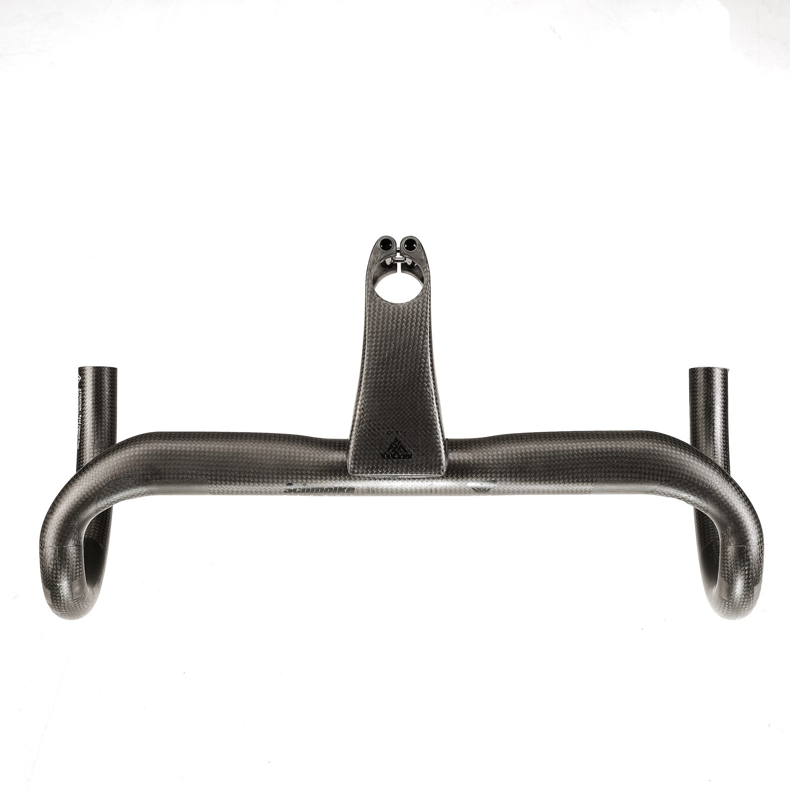


Roadbar Evo TLO · TLO Stem1K · UD, Schmolke · Black · White Edition
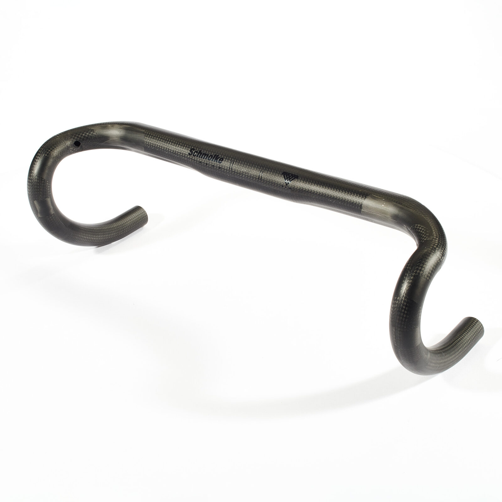
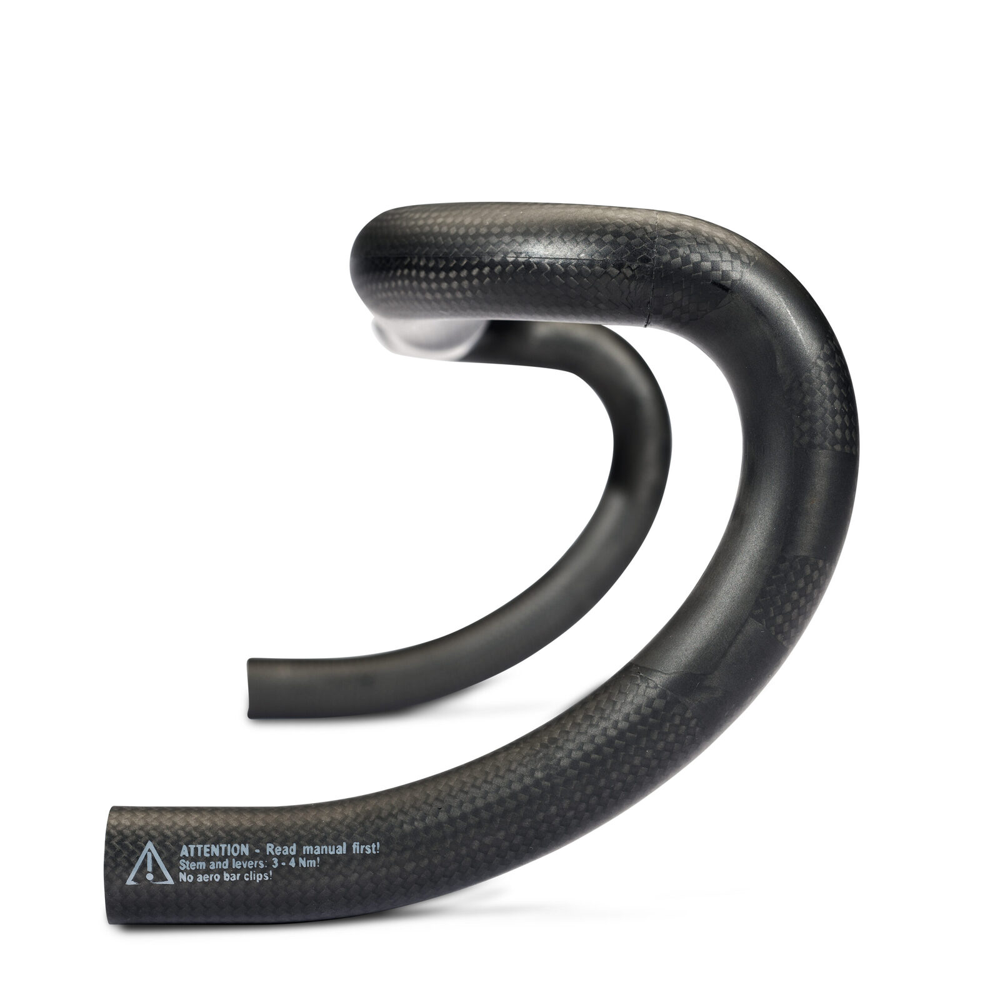


TLO Stem
The TLO Stem comes in 80, 100, 110 and 120mm lengths at ±6°, with a 31.8mm bar clamp and a 1-1/8 inch steerer. The 100mm weighs 86g, with M4 titanium bolts. It is left as unpainted 1K carbon.
Every length has internal cable ports, and the 80mm is approved for gravel and MTB as well as road. The 100 to 120mm lengths are road only. The steerer clamp height is 40mm.
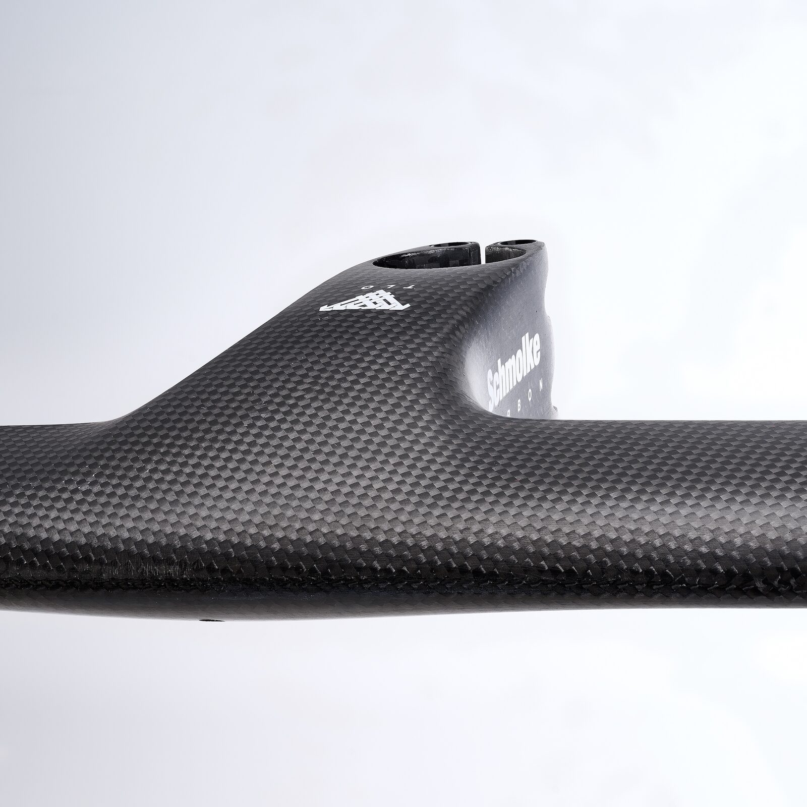
Roadbar Cockpit Aero TLO
The Cockpit Aero TLO uses a 6° flare to cheat the wind with a position that is not too low. The front of the drops is shaped nearly horizontal, so on the hoods the wrists line up with the brake levers.
Stem lengths of 100, 110 and 120mm, 40mm stack, -6°. With bar and stem in one piece, there is no need to thread the cables through the bar separately.
03
Seatpost
Seatpost TLO · SLUp to 23 layers
Schmolke seatposts are known as much for their flex as for their weight. In RennRad magazine's 2012 comparison of comfort seatposts, the TLO and SL took the test victory with the greatest flex, and in 2022 Roadbike magazine's carbon seatpost test ranked Schmolke first again.
Up to 23 layers where the load is high and 7 where it is low let the post flex softly fore and aft while keeping lateral and torsional stiffness. The head clamps the rails at four points and holds round rails and oval carbon rails up to 8 x 12mm without an adapter. A Di2 battery fits inside.
Schmolke's benchmark seatpost. Choose 1K or UD weave and one of three logo editions. UD is a few grams heavier than 1K.
The TLO with 10mm of setback. The same layup with the head moved back, for riders who want the saddle a little further back.
The SL line, hand-wound the same way as the TLO. Finished with 6mm titanium bolts, 1K weave and red and white logos.
Seatpost TLO · TLO Setback · SLUnpainted matt epoxy


Choose the length by measuring how much post shows above the frame (from the top of the frame to the centre of the saddle rails). For example, 170mm exposed suits a 280mm post. Because wall thickness varies along the post, Schmolke seatposts must not be cut, and should not be bought long and shortened.
04
Saddle
TLO 55 · SL 79 · SL 99 · SL 109Full carbon, one piece
The TLO 55 is a saddle made from a single piece of carbon, shell, frame and rails included. It weighs 55g, just as the name says. Instead of padding, the carbon shell flexes to support the rider. In its TLO saddle test, Germany's TOUR magazine found that the centre and wings of the shell flex visibly, making it more comfortable than it looks.
The SL 79 is a 130mm-wide 3K carbon saddle for road, gravel and cross-country. The SL 99 and SL 109 add a leather or non-leather cover to a carbon shell, for riders who want a touch of cushioning with their light weight.
A full carbon saddle with frame and rails in one piece. Available as Black Edition, Team Edition and red and white.
A slightly wider and longer 3K carbon saddle. With a TLO seatpost it makes the lightest pairing for long rides and gravel too.
Saddles with a leather (SL 99, SL 109) or non-leather (SL 109) cover over a carbon shell. The softest of Schmolke's saddles.
TLO 55 · SL 79 · SL 99Black · Team · Red white Edition

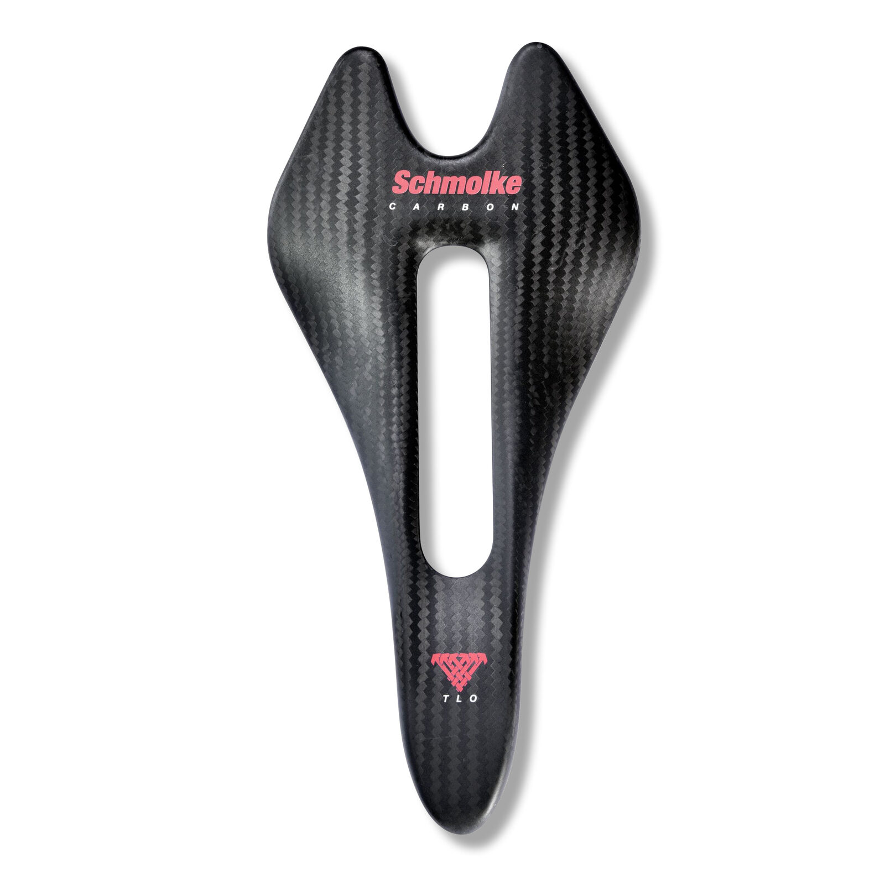


05
Wheels
TLO 37 · TLO 50 · TLO GravelCarbon rims, carbon spokes
Instead of complex one-piece moulding, Schmolke wheels are built the traditional way, lacing very light parts together by hand. Rims laid up by hand from thin, circularly woven prepreg are paired with 24 carbon spokes with titanium end pieces and Extralite or NONPLUS hubs.
The second-generation TLO 37 weighs 840g a pair, a climbing wheelset that took first place in Roadbike magazine's test. The TLO 50 came in at 940g with 50mm rims, which BikeRadar called the lightest 50mm wheelset it had seen. For gravel there is the TLO Gravel PI ROPE, with textile spokes of 2.2g each.

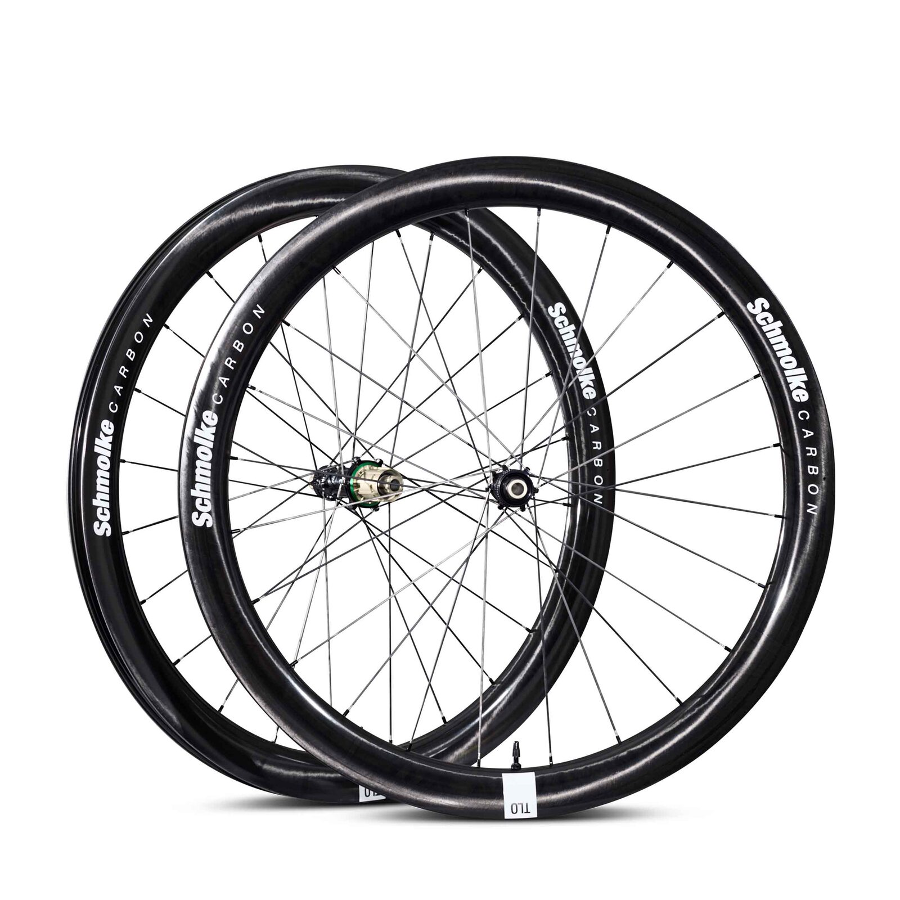
The second-generation TLO 37. A hooked asymmetric rim with 25mm internal width suits 25 to 32mm tyres and runs tubeless. With DT Swiss 180 hubs it weighs 970g.
A 50mm wheelset with T1100 carbon rims and carbon spokes. Takes tyres up to 28 to 40mm, and can also be ordered with steel aero spokes.
A gravel wheelset laced with high-strength polyester PI ROPE spokes. 40 to 45mm tyres are recommended, and the spokes come in 11 colours.
TLO 37 · TLO 50 · DetailsUD carbon, black or white logos


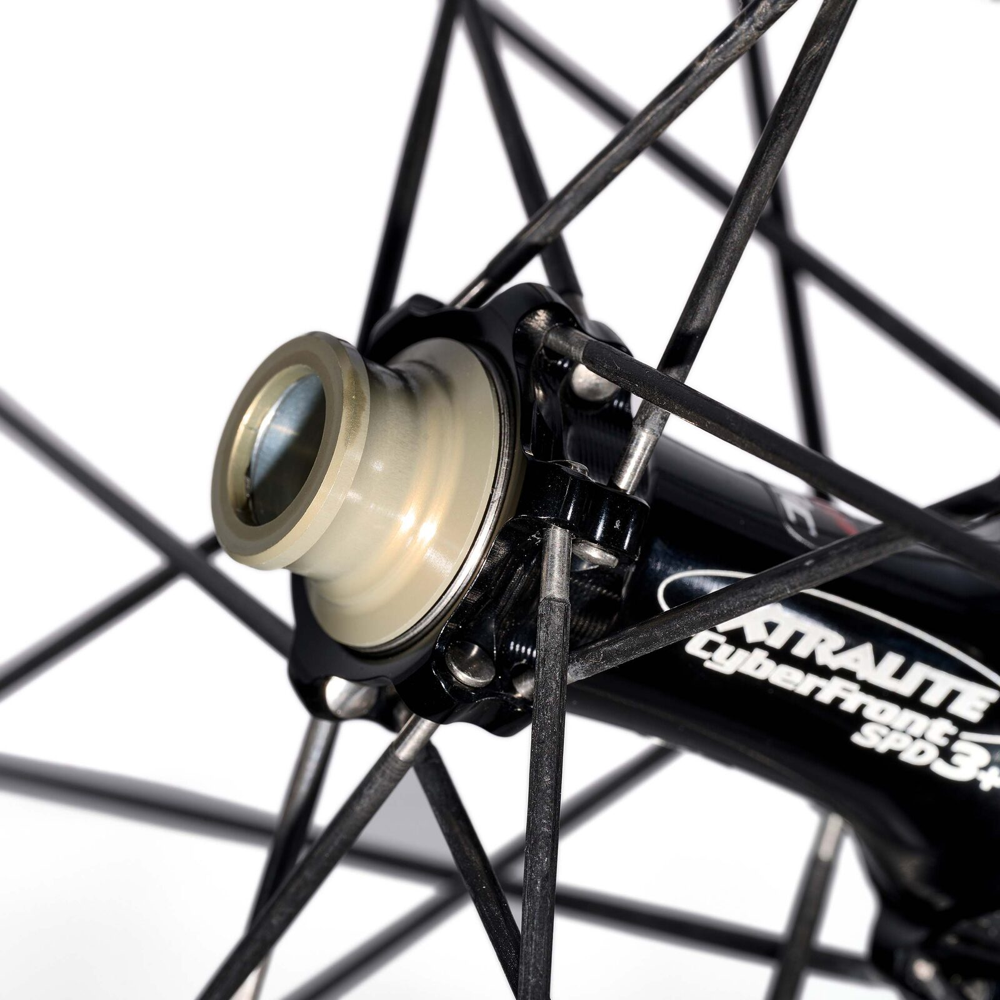

All wheelsets are disc brake with 100mm front and 142mm rear 12mm thru-axles, and the freehub can be Shimano HG, SRAM XDR or Campagnolo. Each wheelset is built by hand in Germany after ordering, so lead times vary by specification. Please contact Rubi Workshop in advance.
06
Folding Bike
Lowriser · Seatpost · 16 inch RimFor Brompton T Line
Schmolke also makes carbon parts for folding bikes. The TLO lowriser for the Brompton T Line has a 15mm rise and 6° sweep and weighs 80 to 95g at 560 to 600mm wide. Each end can be trimmed by up to 10mm.
Folding bikes leave a long stretch of seatpost exposed, so the weight difference is large. The 500 to 600mm TLO folding seatpost weighs 159g at 31.8 x 600mm, saving up to half the weight of a typical steel post. The 16 inch TLO carbon rim weighs 185g.

Minivelo · Folding
With small wheels, the handlebar and seatpost make up a larger share of a minivelo or folding bike. Schmolke's lowriser and long carbon seatposts noticeably cut the weight you fold and lift every day.
Seatpost diameter and sleeve size vary between folding bikes, so Rubi Workshop will first confirm the right diameter and length for your bike.
Folding Bike Parts1K · UD, Black · Team Edition

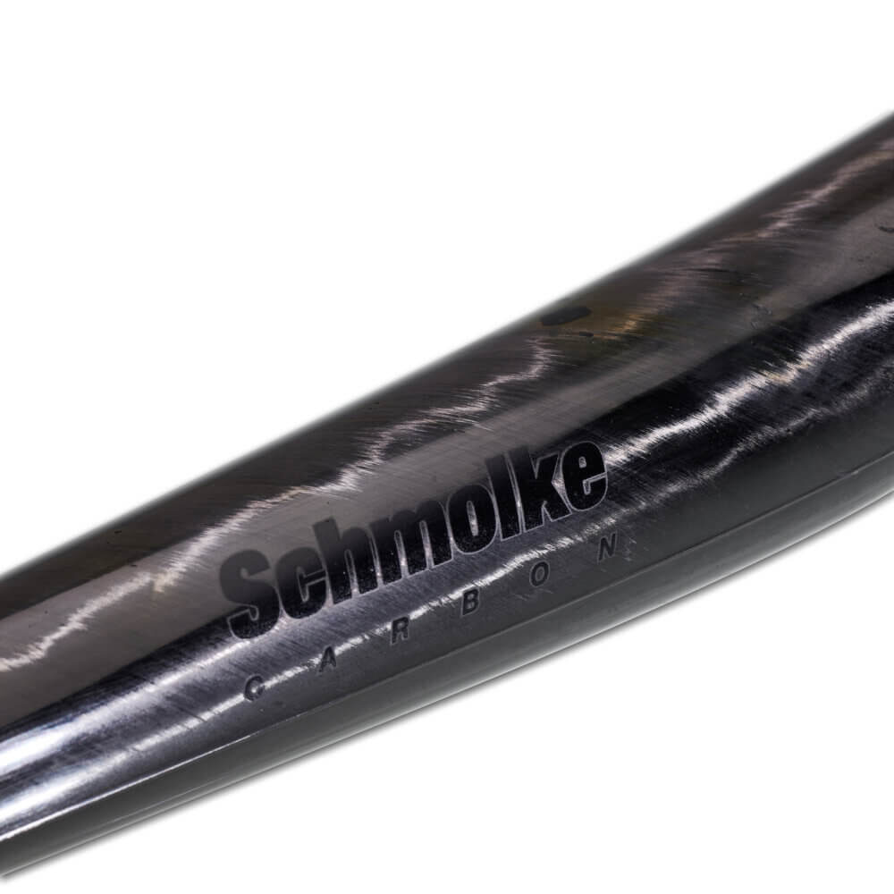

Small PartsBottle cages, carbon screws, bar plugs

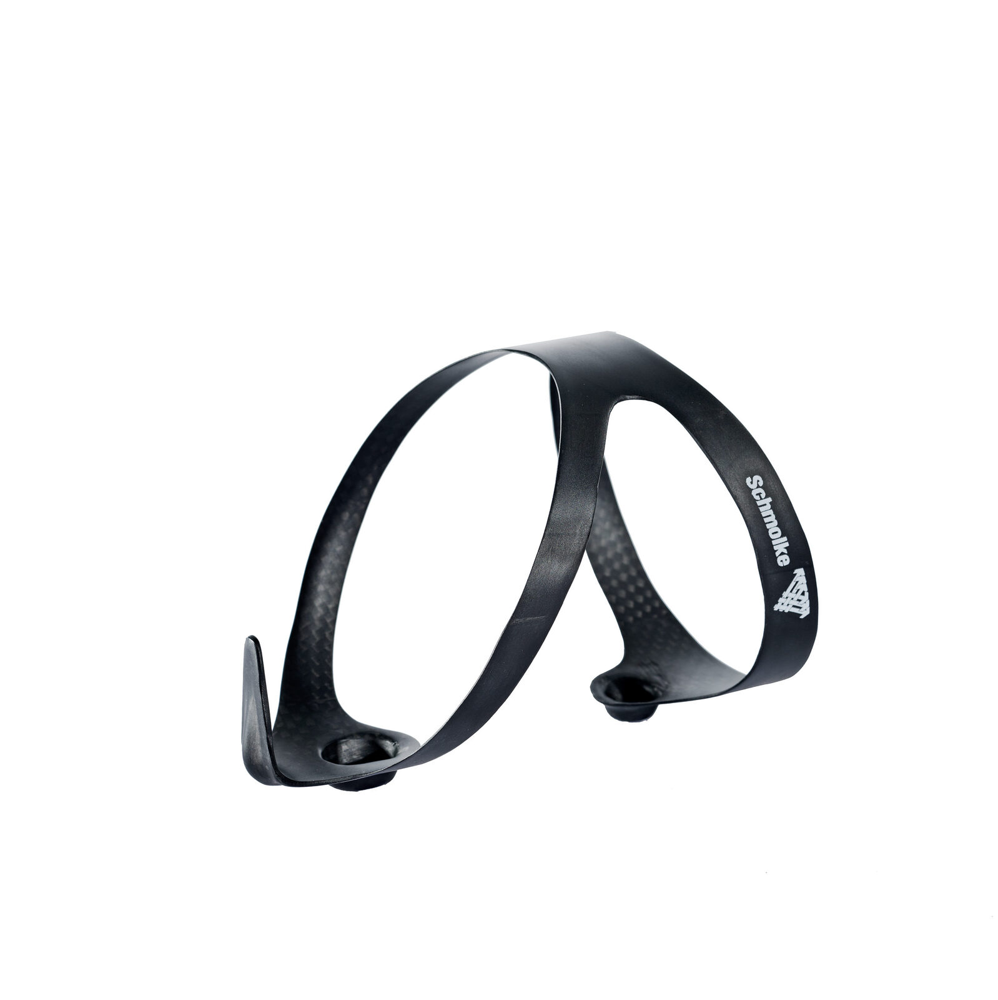

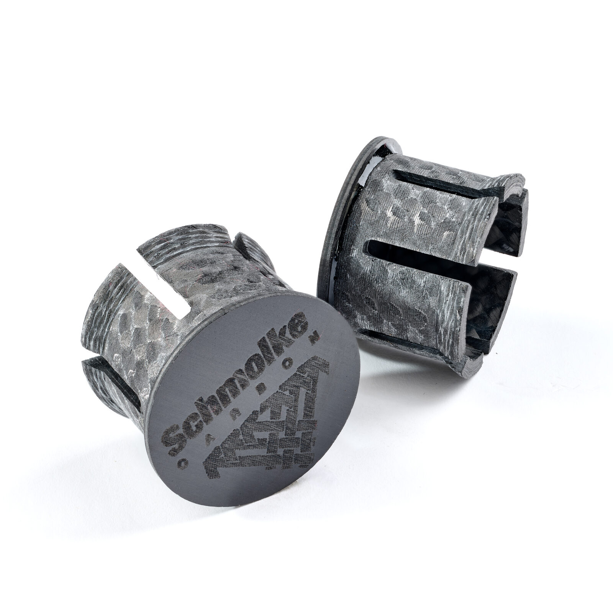
07
Fit Guide
Check width, reach and drop for handlebars, diameter and exposed length for seatposts, and tyre width and system weight for wheels. Figures follow Schmolke's official specifications, and weights are as stated by the manufacturer.
HandlebarsWidth measured outside to outside
| Model | Weight | Width | Reach | Drop | Flare | Stem | Max. load |
|---|---|---|---|---|---|---|---|
| Roadbar Evo TLO | 130 ~ 150g | 400 / 420 / 440mm | 73 / 78mm | 125 / 126mm | - | Separate stem | 110kg |
| Roadbar Cockpit TLO | 222g (420 x 100) | 400 / 420 / 440mm | 73 / 78mm | 125 / 126mm | 6° | 90 / 100 / 110mm, -6° | 110kg |
| Roadbar Cockpit Aero TLO | 250g (420 x 100) | 380 / 400 / 420mm | 77mm | 119mm | 6° | 100 / 110 / 120mm, -6° | 110kg |
SeatpostsWeights at the size shown
| Model | Weight | Diameter | Length | Setback | Saddle rails | Max. rider weight |
|---|---|---|---|---|---|---|
| Seatpost TLO | 95g (27.2 x 350) | 27.2 / 30.9 / 31.6 / 34.9mm | Road 200 ~ 350mm, gravel · MTB 250 ~ 450mm | 0mm | Round, oval up to 8 x 12mm | 110kg |
| Seatpost TLO Setback | 110g (27.2 x 350) | 27.2 / 30.9 / 31.6 / 34.9mm | Road 200 ~ 350mm, gravel · MTB 250 ~ 450mm | 10mm | Round, oval up to 8 x 12mm | 110kg |
| Seatpost SL | 105g (27.2 x 350) | 27.2 / 30.9 / 31.6 / 34.9mm | Road 200 ~ 350mm, gravel · MTB 300 ~ 450mm | - | Round, oval up to 8 x 12mm | 110kg |
| Seatpost TLO Folding Bike | 159g (31.8 x 600) | 31.8 / 34.9mm | 500 / 550 / 600mm | - | Round, oval up to 8 x 12mm | Made to rider weight |
WheelsetsRim width internal / external
| Model | Weight | Rim depth | Rim width | Spokes | Hubs | Max. system weight |
|---|---|---|---|---|---|---|
| TLO 37 TLR Disc 2nd Gen. | 840g | 37mm | 25 / 32.5mm | 24 carbon | Extralite, NONPLUS (970g with DT Swiss 180) | 100kg |
| TLO 50 TLR Disc | 940g | 50mm | 25 / 32.5mm | 24 carbon | Extralite, NONPLUS (1,025g with DT Swiss 180) | 115kg |
| TLO Gravel PI ROPE | 1,170g | 35mm | 25 / 31mm | 24 PI ROPE textile | NONPLUS Centerlock | 110kg |
Schmolke parts are designed around rider weight and use. If you are over the rider or system weight limit, and whenever carbon parts are tightened, we recommend fitting at a shop that uses a torque wrench and carbon paste. Rubi Workshop will check your frame standards and weight and match the handlebar, seatpost, saddle and wheels for you.
08
Story
1989 ~ 2026Konstanz, Germany
A carbon handlebar born from an engineering student's thesis reached the Tour de France podium, and some 30 years later became a 5.4kg complete bike. Rather than announcing new prototypes all the time, Schmolke has kept to delivering what it makes quickly and taking care over every single order.
About to graduate, Stefan Schmolke opens a high-end bike shop with his brother and writes his diploma thesis on new materials and the theory of a carbon racing handlebar.
The year after the thesis, he builds the first rideable carbon road handlebar.
When handlebar orders outgrow his capacity, he founds Schmolke Carbon in Konstanz.
Jan Ullrich finishes second overall at the Tour de France on a Schmolke handlebar. In quality testing, the carbon bar proves stiffer and lighter than aluminium.
In RennRad magazine's comparison test of comfort seatposts, the TLO and SL win with the greatest flex and the lowest weight.
Schmolke begins working alongside THM, a fellow German carbon component maker. Each company runs its own factory and team independently.
For its 30th anniversary, Schmolke introduces carbon frames and complete bikes. The Aerrow and the Infinity gravel bike begin here.
The 5.4kg Leggerissima TLO is recorded as the lightest road bike in Germany's TOUR magazine test.
Schmolke introduces the Roadbar Cockpit TLO and Cockpit Aero TLO, merging bar and stem into one piece.
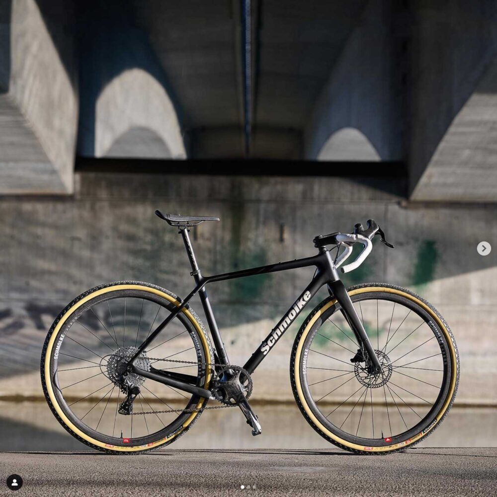

Glossary

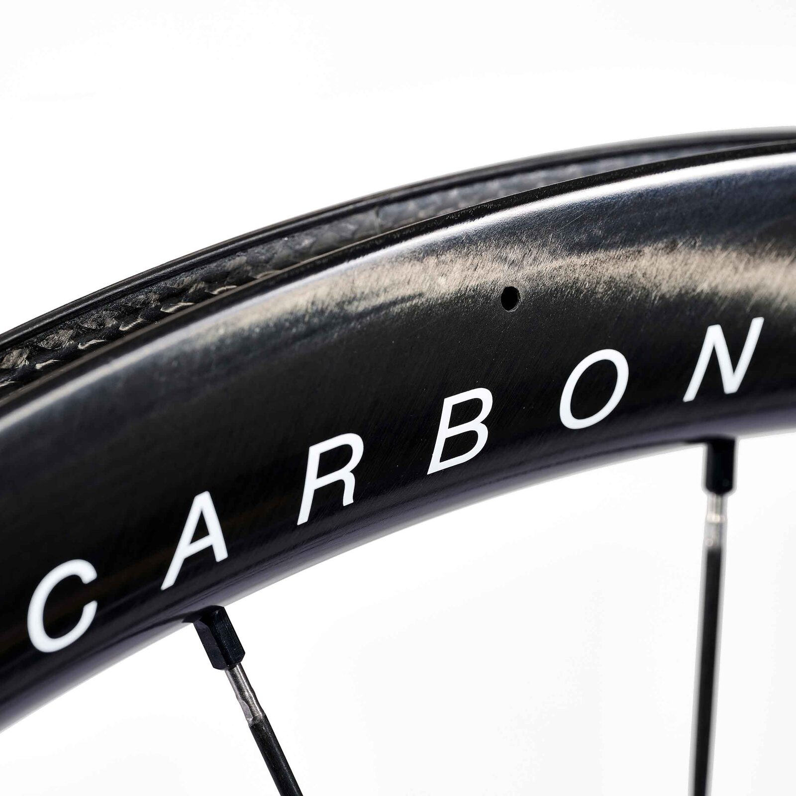
09 · Showroom
You only really feel the weight of carbon parts in your hand. At Rubi Workshop you can see Schmolke parts in person and decide on a setup that suits your frame, weight and riding style. Many products are made in Germany after ordering, so please talk to us about size, finish and lead time in advance. Custom build consultations are also available.
For Dealers
Rubi Company is the official Korean distributor of Schmolke. For retail partnerships and trade terms, please contact Rubi Supply, Rubi Company's B2B channel.